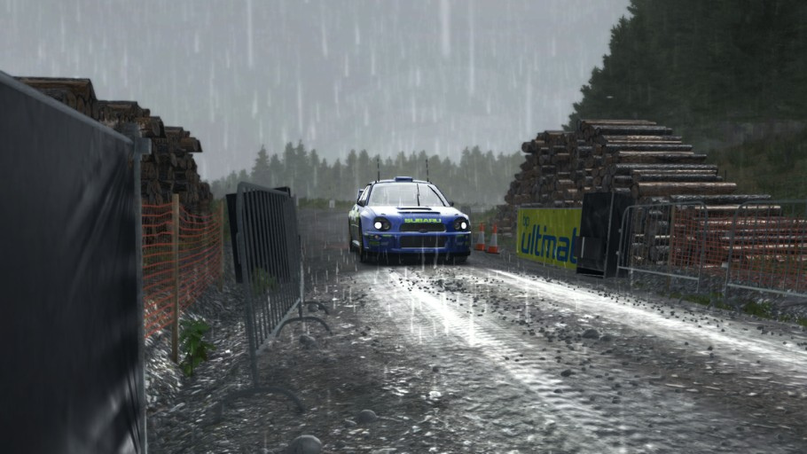
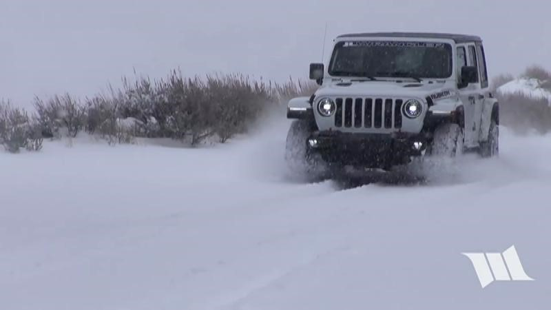

빗길 운행 시..
1. 우천시 밝다고 하더라도 반드시 미등 또는 전조등을 점등하여 상대 운전자에게 자신의 위치를 알리도록 합니다.
2. 우천시에는 평소보다 마찰력이 떨어지게 되기 때문에 차량의 표준 적절 공기압보다 10% 높게 유지하는것이 좋습니다. (차량의 표준 공기압은 운전석 B필러 하단 또는 차량 취급 설명서 참조)
타이어 공기압이 낮을수록 타이어의 접지면이 넓어져 수막현상 발생이 발생하여 사고를 유발합니다.
반대로 타이어 공기압이 높으면 타이어 접지면이 줄어들어 공기압이 낮을때와 비교시 접지력이 떨어지지 않습니다.
3. 한국 도로 배수 상태가 불량한 곳이 있을 수 있으므로 평소보다 20% 감속하여 운행을 해야하며 급가속, 급제동, 과속 및 과한 조향은 하지 않는것이 좋습니다.
4. 악천후일경우 평소보다 50%이상 감속, 차간거리 확보하여야 합니다.
5. 타이어 마모한계선까지 닳으면 반드시 새 타이어로 교체하여야 합니다.

눈길 운행 시..
1. 운행 전, 반드시 차량에 쌓인 눈 모두 제거할 것
전조등, 지붕, 트렁크, 윈도우, 사이드미러 등을 포함한 차량 외부에 쌓인 눈을 모두 제거하고 운전을 시작하는 것이 좋다. 특히 전조등은 상대에게 자신의 존재나 행동을 미리 알리기 위한 것이므로 반드시 눈을 제거하여야 합니다
2. 눈길에서 출발은 2단으로 할 것
눈길에서는 1단으로 출발 시 구동력이 매우 크기 때문에 바퀴가 헛돌 위험성이 있다. 기어 2단으로 출발시 기어 1단으로 출발하였을 때 보다 구동력이 줄기 때문에 적당한 마찰력을 일으켜 차가 부드럽게 움직입니다.
3. 차간거리를 충분히 유지하고 저속으로 운전할 것
결빙이 진행되고 있는 도로나, 눈이 내려 쌓이고 있는 도로에서는 차가 미끄러우기 매우 쉽습니다. 또한 과속을 하면 커브나 교차점에서 제때 정지할 수 없으므로 사고로 연결될 수 있다. 따라서 결빙 도로나 적설 도로에서는 반드시 속도를 줄이고, 차간거리를 충분히 유지하여야 합니다.
4. 앞 차량의 타이어 자국을 따라 운행할 것
눈이 새로 내린 길에서는 앞차의 바퀴자국을 따라 운행하는 것이 좋습니다. 바퀴자국은 차량이 옆으로 미끄러지는 현상을 다소 막아주기 때문입니다. 반면 바퀴 자국이 없는 길에서는 건조한 노면에서보다 훨씬 길어지기 떄문입니다.
5. 커브길이 나타나면 미리 감속한 뒤 커브 돌면서 가속페달을 지긋이 밟을 것
겨울철 커브길에서는 미리 감속한 뒤 가속페달을 조금씩 천천히 밟아야 합니다. 커브를 돌면서 브레이크를 밟으면 접지력을 잃게되어 사고의 위험성이 높아집니다.
6. 급 출발, 급 가속, 급 회전, 급 정지 등 급작스러운 조작은 하지 말 것
차량이 눈길이나 빙판 위에서 미끄러져 사고 위험성이 높아 질 수 있습니다.
7. 풋 브레이크에만 의존하지 말고 엔진 브레이크를 활용 할 것
눈길에 풋 브레이크만 사용하면 스핀현상 때문에 차체가 겉돌게 되고 조향 통제가 불능하게 됩니다.
따라서, 평소에 브레이크 페달을 부드럽게 밟는 습관을 들이고, 엔진 브레이크 사용법을 숙지하는 것이 좋습니다.
엔진 브레이크는 달리는 속도에 비해 한단계 낮은 기어를 넣어 분당 엔진 회전수(RPM)을 급격히 상승시켜 주행속도를 낮추는 방법입니다.
◆ 예를 들면, 내리막길이나 빙판길에서 3~4단으로 달리다 1~2단을 낮추면 엔진 회전수가 급격히 상승하고 속도는 줄어들게 됩니다.
◆ 눈길에서 정차할 때는 풋 브레이크를 적절하게 사용하면서 3단에서 2단, 2단에서 1단으로 기어 변속하는 엔진 브레이크를 사용하는 것이 좋습니다.
8. 주차할 때는 와이퍼를 세워두고 주차브레이크는 가급적 풀 것
와이퍼를 세워놓지 않는다면 눈의 중량감으로 와이퍼가 구부러질 수 있으며, 동결되어 와이퍼 블레이드 고무가 손상이 될 수 있습니다.
주차 브레이크를 잠궈두면 동결되어 풀리지 않는 증상이 발생 할 수 있기 때문에 풀어 놓는것이 좋습니다.
오르막길이나 내리막길에 주차하게 된다면 고임목을 설치하거나 벽 방향으로 최대한 조향하는것이 좋습니다.
수동 변속기의 차량인 경우 1단기어 또는 후진기어 변속 위치에 놓으면 됩니다.
9. 오르막 눈길 출발이 어려울 경우 차체 자세 제어장치(VDC 또는 ESP, ESC)를 끌 것
◆ 차체 자세 제어장치(Vehicle Dynamic Control)는 차체 자세 제어장치를 뜻하며, 완성차 제조사마다 명칭을 다르게 부릅니다.
◆ 차체 자세 제어장치는 특정 바퀴가 슬립과 같은 현상이 발생한 경우 다른 바퀴의 제동을 통해 운전자가 가고자 하는 방향으로 자동차의 자세를 제어하는 장치입니다.
◆ ABS(Anti-lock Brake System)는 제동할 때 과도한 압력을 해제해주는 장치이며, 제동시 작동하게 되는데 이 ABS의 보조 역할을 해주는 장치이기도 합니다
◆ 차체 자세 제어장치는 엔진 시동을 켜면 항시 ON 상태로 작동을 하며, VDC 해제버튼을 누르면 계기판에 VDC 해제 경고등이 점등됩니다.
◆ 겨울철 노면이 결빙된 미끄러운 구간을 지나다보면 4바퀴가 일정하게 회전하는 게 아니면 빙판길로 인해 특정 바퀴는 반드시 미끄러지는 슬립 현상이 일어나게 됩니다
◆ 만약, 운전석 뒷 바퀴가 빙판길을 밟게 되면 마른 노면을 밟고 있는 다른 타이어와 비교해 회전량에 변화가 생기게 됩니다.
◆ 운전자가 원하는 방향과는 다른 방향으로 차가 진행이 되는데 이때, 차체 자세 제어장치가 작동하게 되어 다른 바퀴에 제동을 걸어 차체가 방향을 잡게 하는 역할을 합니다.
◆ 그렇기 때문에 차체 자세 제어장치는 항시 ON 상태로 있어야 합니다.
◆ 4바퀴 중 어느 한쪽 바퀴가 웅덩이 또는 눈에 빠진경우 차체 자세 제어장치가 제동을 자세를 잡기 위해 다른 바퀴에 제동을 걸게 됩니다.
◆ 그렇게 되면 탈출이 불가능 하기 때문에 이러한 경우에 차체 자세 제어장치를 OFF한 채로 탈출하는 것이 좋습니다
◆ 만약, 차체 자세 제어장치를 단계별로 OFF가 가능하다면 1단계 즉, 구동력 제어 시스템(Traction Control System)만 끌 수 있도록 합니다.
◆ OFF를 한 상태로 탈출이 정상적으로 된다면 그 이후에는 반드시 차체 자세 제어장치를 켜야 합니다.
◆ 만약 차체 자세 제어장치를 끈 상태로 운행시 대형사고가 발생 할 수 있습니다.
10. 타이어는 가급적 윈터타이어를 교체할 것
최근 제조사에서 출고타이어로 여름용 타이어를 사용하고 있는데 겨울철에 여름용 타이어를 사용하면 배수능력이 떨어지고 접지력이 좋지 않아 미끄러짐 발생이 일어납니다.
또한 사계절 타이어는 올시즌 타이어와 올웨더 타이어 2가지로 구분할 수 있는데 시중에 판매되는 사계절 타이어의 95%는 올시즌 타이어입니다.
◆ 올시즌 타이어는 미국환경을 기준으로 고려되어 제작된 타이어입니다. 1년 내내 평균온도가 25도 되는 지역을 기반으로 한 겨울에 취약한 타이어이고 3계절(봄, 여름, 가을)로 볼 수 있습니다.
◆ 올웨더 타이어는 유럽환경을 기준으로 고려되어 제작된 타이어입니다. 봄, 여름, 가을, 겨울에 특히 빗길과 눈길에 대응할 수 있는 타이어로 볼 수 있습니다.
그렇기 때문에 겨울용 타이어 가격이 부담스럽다면 한국 기후 특성상 '올웨더 타이어' 를 적극 추천합니다.
겨울용 타이어에는 알파인 타입, 노르딕 타입 2가지로 구분할 수 있습니다.
◆ 알파인 타입은 겨울철 마른 노면에서 최적의 성능을 확보할 수 있으며, 눈길에서의 성능을 어느정도 확보할 수 있습니다.
◆ 노르딕 타입은 겨울철 눈이 쌓인 노면에서 최적의 성능을 확보할 수 있으며, 빙판길에서의 성능을 조금이나마 확보할 수 있습니다.
하지만 겨울용 타이어라고 해서 빙판길에서도 제 성능이 나오는 것은 아니기 때문에 주의하여 운행하여야 합니다.
11. 타이어 공기압은 표준 적절 공기압보다 10% 높게 유지 할 것
겨울에는 공기 밀도와 부피가 높아 타이어 고무가 쉽게 수축합니다. 추운 날에 평소보다 타이어 공기압이 감소하는 이유입니다.
타이어 공기압이 낮을 경우 타이어와 노면 접촉면이 넓어져 눈길 주행시 접지력과 마찰력이 크게 떨어져 제 성능이 나오지 않습니다.